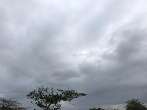
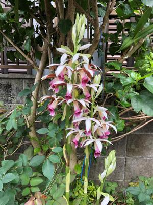

うるがいの話 ある日
最新: 精神科医になった人【うるがいの話 ある日】とは 一日だけのプログです
『うるがいの話』の最新一日だけのプログで、通信料が少なく経済的だ。カニの画像をクリックすると全ての日付が載る『うるがいの話』サイトを表示します
|
|
【うるがいの話】 うるがい(ｳﾙｶﾞｲ urugai)とは、『もずくがに』の名前でとても大きくなります。 |
|---|---|
|
|
【カミマヤーの話】 猫のことを方言でマヤーといいます。カミマヤー（kamimayaa）とは、神の猫のことです。 |
|
【たながぁの音楽】 たながぁ（ﾀﾅｶﾞｰ tanagaa）とは手長えびのことで、何種類かあり大きいのは車 エビぐらいになります。 |

|
【ぶながぁの話】 ぶながぁ(ﾌﾞﾅｶﾞｰ bunagaa)とは、赤い髪の毛、赤い身体、そして身長は１ｍ２０ｃｍ ぐらい、川の蟹を食べているの目撃された。場所は沖縄県国頭郡大宜味村のと ある村僕の隣近所に住んでいる爺さんから、聞いた話です。 |
|
|
【ギーマの話】 ギーマ(giima)とは、山原の里山に咲くスズランに似た、 花を付けます。実は食べられます、 気が付くと口の周りが紫になっています。 |
2023年03月28日 (火）精神科医になった人
15:26
 
天気は予報に反して時々晴れ、日差しで発見し易くなったのだろうか、百円は
午後２時半に無くなっていた。この日差しを利用すべく布団をべランダに干す
『魔がさす瞬間 危ない自分の心理学 小田 晋／著』より
第10章 あなたのこころから魔を払うために
一度トップに立った人間があっという間に転落するドラマは、歴史のなかでも
幾度となく繰り返されてきました。いくつかのエピソードを比較してみると、
そこに共通するのは、やはり権威を掌握し、絶頂期にあるときに転落のタイミ
ングが訪れていることです。しかも、それまで成功し続けていた政治家や大権
力者たちが、これをやれば最終的な目的は達成するとも言えるようなきわめつ
けの大計画が、転落に直結しているという点です。その計画を思いついたとき
、トップの人間は〝自分には特別な能力があり”次の計画も決して失敗しない
とつい考えがちです。
そこで計画を次々と実行に移そうとしますが、最終段階に入ったときに初めて
失敗する、
プーチンや習近平がこれにあたるのか、フムフム
あとがき
筆者がこの本を書く個人的機縁になったのは、最初に読んだフロイトの(とい
うより心理学の)本が、『日常生活の精神病理』だったからです。
小学校を卒業するとき、担任の佐々部八朔先生 岡山市立弘西小学校)がこの
本を下さったのです。多分、卒業前の保護者面談の時、母親が「亡くなった父
親の後を継がせて医者にしたいのに、文科系の本ばかり読んでいて勉強はちっ
ともしない」とこぼしたのを聞いて、「医学を学んでもこんな道もあるよ」と
それとなく教えるつもりで丸井清泰訳の岩波文庫版を下さったのです。
その時は小学生ですから、読んで全部わかったわけではありません。でもいく
つかの挿話から人間の心の奥深さ、気味わるさを感じたようです。
その後、医学を学び、精神科医になり、精神鑑定のさいに犯罪者、とりわけ心
に病気をもつ犯罪者と面接してみて強く感じたのは・・・・・・・・
精神科医になった人は、そもそも小学生の時点で凡人と違う！
１５時１６分 ビットコインの総資産 ￥１０、３４０（↓３０５）